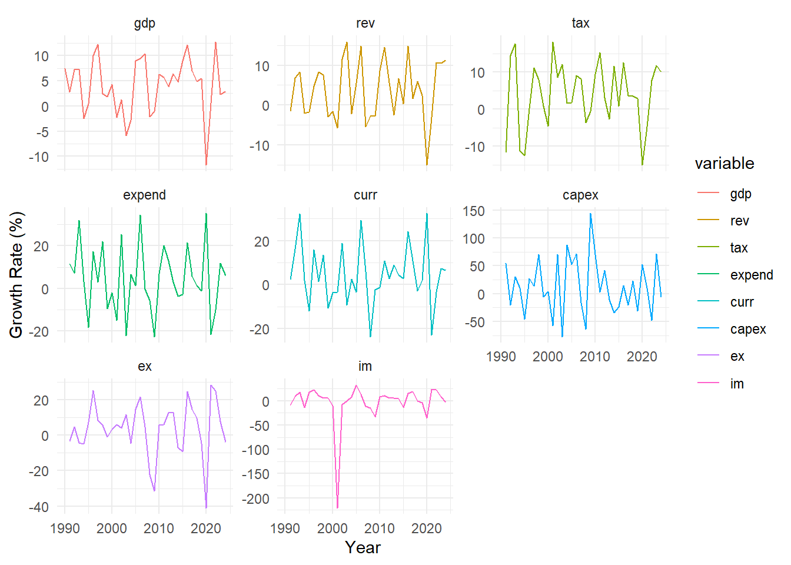
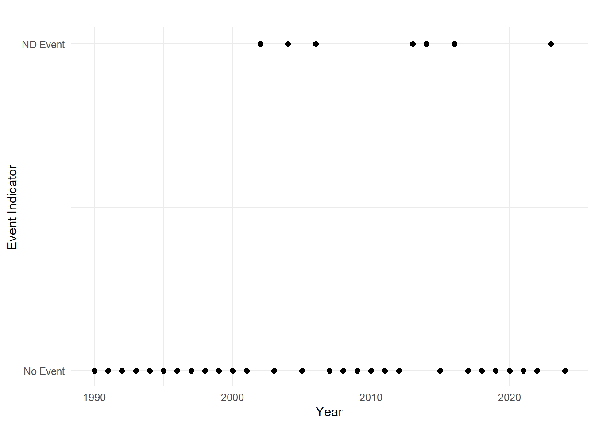

| Shock From | Affects | Effect |
|---|---|---|
| ND | GDP | − |
| ND | Revenue | − |
| ND | Tax | − |
| ND | Expenditure | + |
| ND | Current | + |
| ND | Capex | − |
| ND | Imports | − |
| Macro vars | ND | 0 |
| Macro vars | Macro vars | NA |
Modeling Macroeconomic Impacts of Natural Disasters
Abstract
This note proposes the use of vector autoregressive (VAR) methods to quantify the macroeconomic impact of natural disasters. Two approaches are compared: (i) a VARX model that, by construction, treats natural disaster events as exogenous shocks, and (ii) a standard VAR model with structural identification based on zero and sign restrictions, refined through the Median-Target method, to impose exogeneity. The methodology is applied to Seychelles—a small island state vulnerable to climate change-induced natural disasters—to examine the effects of disaster shocks on key macroeconomic variables, including output, fiscal revenues, and external balances. The findings suggest that the structural VAR approach may be preferable, as it allows for the integration of economic theory-based restrictions and prior beliefs. The results can inform the incorporation of climate shocks into macroeconomic projections and support the design of resilience-building policies in vulnerable economies.
1 Introduction
Natural disasters can impose substantial macroeconomic costs, particularly in small island economies where shocks tend to be more persistent and harder to absorb. Given their size, openness, and often narrow economic bases, these countries face unique vulnerabilities to climate-induced disasters such as floods and storms. Understanding the transmission channels through which these shocks affect output, public finances, and external balances is critical for designing effective fiscal, external, and climate-resilience policies.
This note develops and compares two empirical strategies based on the vector autoregressive (VAR) modeling framework to quantify the macroeconomic effects of natural disasters. Using annual data for Seychelles—a small island state with recurrent exposure to climate risks—the analysis investigates how natural disaster shocks propagate through key macroeconomic variables.
The VAR framework offers several advantages over single-equation methods, such as local projections, which have gained popularity in empirical macroeconomics. Unlike single-equation models, the VAR system treats all variables as jointly endogenous, capturing their dynamic interrelationships. This is especially important in macroeconomic settings where feedback loops and indirect effects matter. However, a key challenge arises in modeling natural disasters within such a system: while macroeconomic variables influence each other, natural disaster events are generally exogenous to economic activity in the short run.
This note addresses this challenge by exploring two alternative approaches. The first is a VARX specification, which treats natural disaster events as an exogenous binary variable included directly in the system. This allows to capture changes in macroeconomic variables due to exegenously determined shift. The second is a standard structural VAR (SVAR) model, where identification is achieved using a combination of zero and sign restrictions on the contemporaneous relationships between variables. This structural identification is refined using the Median-Target method proposed by Fry and Pagan (2011), which selects the orthogonalization that best represents the median responses across accepted draws.
These approaches are grounded in a growing body of empirical work. VARX models remain widely used in the analysis of external shocks and fiscal multipliers, particularly when the exogeneity of the shock is well motivated (e.g., Cavallo and Noy, 2021; Ramey and Zubairy, 2018). Structural VARs with zero and sign restrictions have become standard tools for identifying macroeconomic shocks, including those related to climate and disasters (e.g., Arias et al., 2021; Born et al., 2021). These methodological developments and applications support the relevance of the approaches outlined in this note.
2 Methodology
2.1 VARX Model
The VARX approach extends the standard VAR framework by incorporating natural disasters as an exogenous binary variable. The disaster dummy equals one in years when a major natural disaster occurs, and zero otherwise. This setup enables us to trace the average response of macroeconomic variables following a disaster event while preserving the endogeneity and dynamic feedback among the macro variables themselves.
The reduced-form VARX(\(p\)) model is specified as:
\[ Y_t = A_1 Y_{t-1} + \cdots + A_p Y_{t-p} + B X_t + u_t, \]
where \(Y_t\) is a vector of endogenous macroeconomic variables, \(X_t\) is the exogenous disaster dummy, \(A_1, \ldots, A_p\) are coefficient matrices, \(B\) captures the direct impact of disaster shocks, and \(u_t\) is a vector of reduced-form residuals. Estimation is conducted equation-by-equation using ordinary least squares (OLS).
To simulate a natural disaster shock and examine its dynamic effects, we simulate impulse response functions under two counterfactual scenarios using the estimated VARX model:
- Baseline scenario (no disaster): The disaster variable is set to zero for all periods, i.e., \(X_t = 0\) for all \(t\).
- Disaster shock scenario: A one-time natural disaster shock is introduced at time \(t = 0\), such that \(X_0 = 1\) and \(X_t = 0\) for all \(t > 0\).
The impulse response to a natural disaster shock is computed as the difference between the two simulated paths. This approach traces the marginal effect of a disaster event on the trajectory of macroeconomic variables, holding all other shocks constant.
There are a few advantages of this VARX approach to model macroeconomic impacts of natural disasters. First, it does not require structural identification. The disaster shock is treated as an exogenous binary variable, avoiding the need for contemporaneous restrictions among endogenous variables. Second, by default, it does not allow for contemporaneous feedback from macroeconomic conditions to disasters. The natural disaster dummy is assumed to be strictly exogenous within the system. Third, it is straightforward to estimate and interpret. The model can be estimated using ordinary least squares (OLS), and simulation of counterfactual paths is transparent and tractable.
Overall, the VARX approach is computationally tractable and well-suited for scenario-based simulations. However, it has two notable limitations. First, it does not permit contemporaneous feedback from macroeconomic conditions to the likelihood or severity of natural disasters—an important consideration in contexts where such endogeneity may emerge over longer horizons. Second, the framework lacks flexibility to incorporate theoretical priors or economically grounded assumptions about the direction and magnitude of responses to disaster shocks, which can be crucial for structural interpretation, policy inference, internal consistency in a given macroeconomic framework.
2.2 VAR with Structural Identification
To account for potential endogeneity and contemporaneous interactions among macroeconomic shocks, we estimate a structural VAR (SVAR) model identified using economically motivated restrictions. This framework offers a coherent approach for quantifying the causal effects of natural disaster shocks, particularly when assessing their dynamic impact across fiscal and external sector variables.
The structural form is given by:
\[ A_0 Y_t = A_1 Y_{t-1} + \cdots + A_p Y_{t-p} + \varepsilon_t, \]
where \(A_0\) captures contemporaneous relationships among variables, and \(\varepsilon_t\) is a vector of orthogonal structural shocks. Identification is based on a combination of zero and sign restrictions imposed on \(A_0^{-1}\).
The model includes the following macroeconomic variables: GDP, total revenue, tax revenue, government expenditure, current expenditure, capital expenditure, exports, and imports. We impose the following identifying assumptions:
- Zero restriction: The natural disaster dummy is not contemporaneously influenced by any macroeconomic variable, reflecting its exogenous nature.
- Sign restrictions on the ND shock:
- GDP, revenue, tax revenue, capital expenditure, and imports are expected to decline.
- Government and current expenditure are expected to rise.
The full set of restrictions is summarized in Table 1. The sign restrictions on the natural disaster (ND) shock are imposed only on impact—that is, on the contemporaneous responses of macroeconomic variables in the first period following the shock. This approach ensures that identification remains theoretically informed while allowing the dynamic responses over subsequent periods to be determined by the data. Imposing restrictions only on impact accommodates the possibility that macroeconomic adjustment paths may vary across contexts, especially where recovery dynamics and policy responses may exhibit country-specific features or nonlinear effects over time.
One limitation of standard sign-restricted SVARs is that accepted impulse responses may reflect both structural and sampling uncertainty. To address this, we apply the Median-Target (MT) method of Fry and Pagan (2011), which selects the orthogonalization that most closely matches the median response across draws, enhancing interpretability and robustness.
3 Data
The dataset comprises annual observations from 1990 to 2024 for key macroeconomic variables in Seychelles, including real GDP, total revenue, tax revenue, total expenditure, current expenditure, capital expenditure, exports, and imports. All nominal series are deflated using the consumer price index (CPI) to express values in real terms. To ensure stationarity and facilitate dynamic analysis, all macroeconomic variables are transformed into growth rates (see Figure 1).
A natural disaster (ND) dummy variable is constructed based on recorded major events from the EM-DAT database. The dummy takes a value of one in years of significant disaster occurrence and zero otherwise. This captures the timing of exogenous shocks without assuming direct economic feedback within the same year (see Figure 2).


| variable | n | mean | median | max |
|---|---|---|---|---|
| Gdp | 35 | 4.04 | 4.72 | 12.71 |
| Rev | 34 | 3.74 | 5.10 | 15.83 |
| Tax | 34 | 4.05 | 3.60 | 18.10 |
| Expend | 34 | 4.54 | 3.16 | 35.21 |
| Curr | 34 | 4.48 | 2.56 | 32.39 |
| Capex | 34 | 13.66 | 9.99 | 144.25 |
| Ex | 34 | 3.79 | 5.62 | 28.47 |
| Im | 34 | -3.08 | 5.85 | 33.13 |
| Nd | 35 | 0.20 | 0.00 | 1.00 |
Table 2 presents summary statistics for the main variables. The sample covers 35 annual observations from 1990 to 2024. The table reports the number of non-missing observations, means, medians, and maximum values. Capital expenditure (capex) displays the highest volatility, reflecting large fluctuations in public investment, while the natural disaster dummy (nd) indicates that significant disaster events occurred in approximately 20 percent of the sample years.
3.1 Stationarity Tests
To validate the use of VAR models in levels, stationarity tests were performed using both the Augmented Dickey-Fuller (ADF) and Phillips-Perron (PP) methods.
| variable | adf | pp |
|---|---|---|
| Gdp | 0.010 | 0.013 |
| Rev | 0.010 | 0.010 |
| Tax | 0.010 | 0.010 |
| Expend | 0.010 | 0.010 |
| Curr | 0.010 | 0.010 |
| Capex | 0.010 | 0.010 |
| Ex | 0.010 | 0.022 |
| Im | 0.029 | 0.010 |
As shown in Table 3, the majority of macroeconomic series reject the null hypothesis of a unit root at conventional significance levels under both testing methodologies. The consistency across tests supports the use of growth rate series in levels without further differencing in the VAR estimations.
3.2 Lag Length Selection
Given the limited sample size, selecting an appropriate lag length is a critical step in VAR model specification. Several standard lag selection criteria were considered, including the Akaike Information Criterion (AIC), the Hannan-Quinn Criterion (HQ), the Schwarz Criterion (SC), and the Final Prediction Error (FPE).
Table 4 presents the results of the lag length selection. Most criteria point to one or two lags as optimal. However, higher-order models frequently produce unstable or undefined information criterion values, reflecting the limited number of observations available for estimation. In light of these considerations, a lag order of one is chosen for the baseline VAR specification.
This choice reflects a balance between the need to capture key dynamic relationships and the imperative to avoid overfitting, particularly in a small-sample context. With only 35 annual observations, restricting the model to a single lag ensures parsimony while retaining the ability to analyze short-term macroeconomic dynamics.
| 1 | 2 | 3 | 4 | |
|---|---|---|---|---|
| AIC(n) | 3.938000e+01 | 3.872000e+01 | -64.73 | -Inf |
| HQ(n) | 4.045000e+01 | 4.075000e+01 | -61.74 | -Inf |
| SC(n) | 4.274000e+01 | 4.507000e+01 | -55.39 | -Inf |
| FPE(n) | 1.472101e+17 | 2.195516e+17 | 0.00 | 0 |
3.3 Model Specification and Dimensionality Considerations
Given the relatively small sample size (35 annual observations) and the large number of macroeconomic indicators under consideration, estimating a single, comprehensive VAR model risks overparameterization and loss of degrees of freedom. To mitigate the “curse of dimensionality”—where the number of estimated parameters grows rapidly with the number of variables—two separate VAR models are estimated.
The first VAR focuses on GDP growth and key fiscal variables (total revenue, tax revenue, total expenditure, current expenditure, and capital expenditure), while the second VAR examines the relationship between GDP growth and external sector indicators (exports and imports). GDP is included in both systems to maintain a consistent macroeconomic anchor across fiscal and external dynamics.
This strategy preserves model tractability and robustness, aligning with the need for parsimony highlighted earlier in the context of lag length selection and ensuring that the estimated impulse responses remain reliable despite the small sample constraint.
4 Results
4.1 VARX Results
Include VARX results here.
4.2 VAR Results
This section presents the impulse responses to a natural disaster shock based on the zero-sign restricted SVAR model. Figure 3 presents the impulse responses of key macroeconomic variables,including output, public finances, and external sector indicators, to a one-time natural disaster shock. Each chart reports the median response along with confidence bands obtained from the accepted draws.
The results suggest that GDP growth declines immediately following the shock, consistent with expectations of disrupted production, infrastructure damage, and heightened economic uncertainty. Total and tax revenues also fall sharply, reflecting the contraction in economic activity and possible delays in tax collection mechanisms.
On the expenditure side, the government appears to increase spending in the immediate aftermath of the shock, particularly through current expenditures, likely driven by emergency relief operations and social transfers. However, capital expenditures decline substantially, which may reflect fiscal reallocation away from investment projects, project execution delays, or tighter financing conditions. Among the fiscal variables, capital spending shows the most volatile response, with wide confidence intervals indicating heightened uncertainty in post-disaster investment behavior.
Turning to the external sector, imports initially surge following the disaster shock, potentially reflecting increased demand for relief goods, construction materials, and capital equipment required for reconstruction. However, this effect dissipates over time. In contrast, exports exhibit a sharp and persistent decline, likely due to the disruption of production and trade infrastructure, as well as reduced output in export-oriented sectors. These dynamics highlight the vulnerability of trade balances to natural disasters, particularly for small open economies.
Overall, the pattern of responses aligns well with theoretical priors and previous empirical findings. Natural disaster shocks are contractionary and induce immediate fiscal and external imbalances, followed by gradual adjustments as the economy stabilizes and recovery efforts take effect.

5 Conclusion
Include concluding remarks here.
References
Placeholder for references